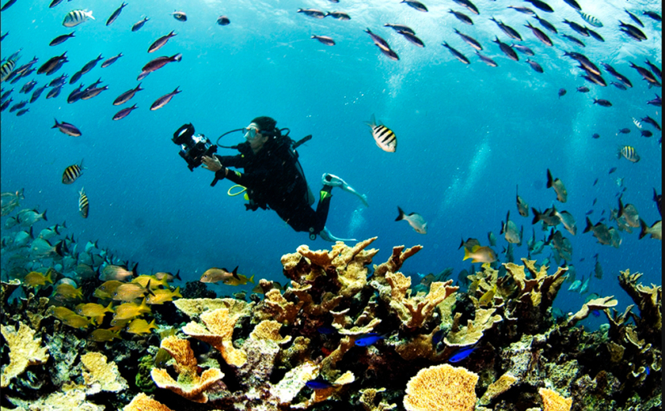
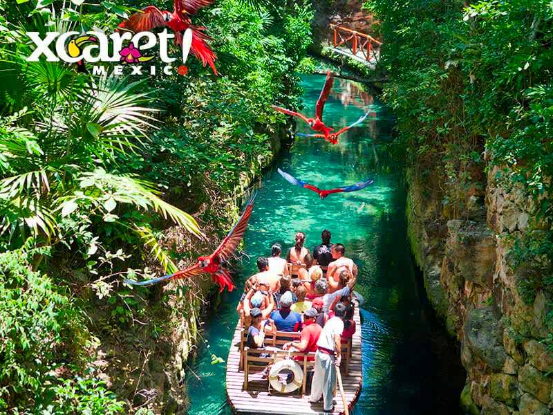

Ciudades
Si eliges como destino de vacaciones la Riviera Maya te encontrarás en un lugar único en el mundo, ya que se trata de un paraíso caribeño cargado de riquezas naturales y culturales nunca vistas en otro lugar, acontinuacion algunas ciudades con sus actividades:
Puerto Morelos
Se encuentra 32 kilómetros de Cancún. Allí encontramos el Parque Nacional Arrecife de Puerto Morelos, un área natural protegida, en donde se halla una barrera de arrecifes con una gran variedad de peces tropicales, delfines y tortugas, que habitan entre multicolores coralinas, entre las que se puede realizar deportes náuticos como el windsurf, esnórquel y el buceo.

Volver al inicio
Playa del Carmen
La ciudad más grande de la Riviera Maya que ofrece todo tipo de servicios turísticos disponibles. Famosa y popular por dos de sus grandes atractivos: la Quinta Avenida, conocida por ser "el alma de Playa", que se presenta como un largo paseo peatonal en donde se encuentran todo tipo de establecimientos: pequeños hoteles, tiendas, restaurantes, bares con música en vivo, discotecas y espectáculos al aire libre, y la zona hotelera Playacar.

Volver al inicio
Xcaret
El parque eco-arqueológico Xcaret es una visita imperdible. Aquí puedes vivir la experiencia de nadar en ríos subterráneos y de conocer toda la cultura de México en un solo lugar. Su cultura ancestral envuelta en un paraje único, diferenciado por su flora y fauna, sus restos arqueológicos, ríos subterráneos, antiguos cenotes mayas, profundas cavernas e incluso fósiles marinos.

Volver al inicio
Akumal
Es el lugar de las tortugas. La cultura maya le ha dado este nombre a esta espléndida bahía de aguas cristalinas debido a que su playa es el sitio elegido por las tortugas para llevar a cabo su ciclo reproductivo. Aquí también puede realizar buceo entre de las corrientes de agua dulce que proceden de las cuevas y ríos subterráneos cercanos, así como en los arrecifes costeros del lugar.

Volver al inicio
Tulúm
En sus orígenes, esta ciudad marítima amurallada fue un antiguo puerto comercial maya. Se trataba de una ciudad-fortaleza en donde ahora se sitúa una de las zonas arqueológicas más imponentes y bellas de la Riviera Maya. En la actualidad, Tulúm está preparada para acoger al visitante con una rica oferta hotelera, restaurantes y locales de ocio.
Volver al inicio
Cobá
Se trata de una jungla que esconde los templos ancestrales y las murallas de la cultura maya. Al igual tambien podemos encontras varios cenotes "aguas turbias" ahí.

Volver al inicio